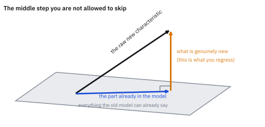
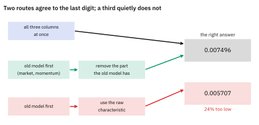
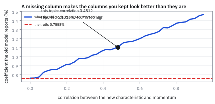
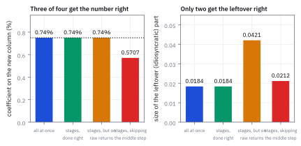

26.5 The Frisch–Waugh–Lovell Theorem
regression ทีละขั้นให้คำตอบเดียวกับทำทีเดียวทุกหลัก ถ้าหักส่วนที่ model เดิมอธิบายได้ออกจากคอลัมน์ใหม่ก่อน และสูตรเดียวกันบอกว่าค่าประมาณของ factor return คลาดได้แค่ไหน
risk model ที่ใช้อยู่มี market กับ momentum นักวิจัยเจอคุณสมบัติใหม่ของหุ้น 12 ตัว เขาไม่อยากรื้อ model จึงเอาส่วนที่ model เดิมอธิบายไม่ได้ของผลตอบแทนวันนี้ ไป regress บนคุณสมบัติใหม่ ได้ 0.5707% ต่อหนึ่งหน่วย เพื่อนที่รื้อประมาณใหม่ทั้งสามคอลัมน์ได้ 0.7496% ใครถูก และความต่างมาจากไหน?
ลองตอบก่อนเปิดเฉลย
ตัวเลข 0.7496% ถูก ทางลัดหดค่าเข้าหาศูนย์ด้วยตัวคูณ 0.7613 เสมอ ไม่ว่าเครื่องหมายจะเป็นอะไร เพราะคุณสมบัติใหม่มีส่วนที่ซ้ำกับ market และ momentum อยู่ ส่วนนั้นเพิ่มตัวหารแต่ไม่เพิ่มตัวตั้ง ถ้าหักส่วนที่ซ้ำออกจากคุณสมบัติใหม่ก่อนแล้วค่อย regress จะได้ 0.7496% ตรงทุกหลัก และได้ residual ชุดเดียวกับการรื้อทั้งหมด นี่คือ Frisch–Waugh–Lovell
สิ่งที่เราจะสร้าง
15.1 แก้ OLS ทีเดียวด้วย normal equations 26.3 ใช้ projection $\mathbf P$ แยกคุณสมบัติใหม่เป็นส่วนเก่ากับส่วนใหม่ และเห็นว่าการใช้ส่วนใหม่ทำให้ factor return เก่าไม่ขยับ หน้านี้พิสูจน์ว่าทำไม ทฤษฎีบทนี้คือใบอนุญาตให้ประมาณ model เป็นขั้น ๆ โดยไม่เสียอะไรเลย
เราจะ regress ข้อมูลหุ้น 12 ตัวทีเดียวเป็นคำตอบอ้างอิง ทำเป็นขั้นอย่างถูกวิธีแล้วพิสูจน์ว่าได้เท่ากัน ดูทางลัดสองทางที่คนชอบใช้และพังคนละแบบ ดูว่า model เดิมให้เครดิต momentum เกินจริงแค่ไหน แล้วขยายไปกรณีที่หุ้นแต่ละตัวมีความผันผวนเฉพาะตัวไม่เท่ากัน ซึ่งให้สูตรความคลาดของ factor return ที่บทที่ 27 ใช้
ศัพท์ที่ใช้ในหัวข้อนี้
- Frisch–Waugh–Lovell (FWL)
- ทฤษฎีบทที่บอกว่าค่าสัมประสิทธิ์ของคอลัมน์กลุ่มที่สองใน regression เต็ม เท่ากับค่าที่ได้จาก regress ส่วนที่เหลือของ $\mathbf y$ บนส่วนที่เหลือของคอลัมน์กลุ่มนั้น หลังหักกลุ่มแรกออกจากทั้งคู่
- Residual maker $\mathbf M$
- $\mathbf M=\mathbf I-\mathbf P_1$ คูณ vector ไหนก็ได้ส่วนที่คอลัมน์ของ model เดิมอธิบายไม่ได้ ทำซ้ำแล้วได้ผลเดิม
- Residualize
- การหักส่วนที่คอลัมน์เดิมอธิบายได้ออกจากคอลัมน์ใหม่ ก่อนนำไปใช้ เป็นขั้นกลางที่ข้ามไม่ได้
- Omitted variable bias
- ค่าสัมประสิทธิ์ที่เอนเมื่อ model ขาดคอลัมน์ที่สัมพันธ์กับคอลัมน์ที่มีอยู่ คอลัมน์ที่มีอยู่รับเครดิตของตัวที่ขาดไป
- Weighted least squares (WLS)
- least squares ที่ถ่วงแต่ละแถวด้วย $1/\sigma_i^2$ ใช้เมื่อความคลาดของแต่ละแถวไม่เท่ากัน เป็นวิธีที่ 27.1 ใช้หา factor return
- Estimation error covariance $\mathbf G$
- covariance ของความคลาดระหว่าง factor return ที่ประมาณได้กับค่าจริง เท่ากับ $(\mathbf B^{\mathsf T}\boldsymbol\Omega_\epsilon^{-1}\mathbf B)^{-1}$ ยิ่งหุ้นน้อย ยิ่งใหญ่
สัญลักษณ์และหน่วย
| สัญลักษณ์ | ความหมาย | หน่วย |
|---|---|---|
| $\mathbf y$ | ผลตอบแทนของหุ้น 12 ตัวในวันเดียว | % |
| $\mathbf X_1,\ \mathbf x_2$ | คอลัมน์ของ model เดิม (market, momentum) และคุณสมบัติใหม่ | ไม่มีหน่วย |
| $\hat{\boldsymbol\beta}_1,\ \hat\beta_2,\ \mathbf e$ | ค่าสัมประสิทธิ์และ residual ของ regression เต็ม | % |
| $\hat{\boldsymbol\gamma}_1,\ \hat\gamma_2$ | ค่าที่ได้จากการทำทีละขั้น | % |
| $\mathbf P_1,\ \mathbf M$ | projection ลงบน range ของ $\mathbf X_1$ และ $\mathbf I-\mathbf P_1$ | ไม่มีหน่วย |
| $\tilde{\mathbf x}_2,\ \hat{\boldsymbol\eta}_1$ | $\mathbf M\mathbf x_2$ และ $\mathbf M\mathbf y$ | ไม่มีหน่วย, % |
| $\boldsymbol\delta$ | ค่าสัมประสิทธิ์ของ $\mathbf x_2$ บน $\mathbf X_1$ | ไม่มีหน่วย |
| $\mathbf W,\ \mathbf H,\ \mathbf G$ | น้ำหนัก $\boldsymbol\Omega_\epsilon^{-1}$, matrix ที่แปลงผลตอบแทนหุ้นเป็น factor return และ covariance ของความคลาด | 1/%², ไม่มีหน่วย, %² |
ขั้นที่ 1 — ข้อมูล และคำตอบอ้างอิงจากการทำทีเดียว
โจทย์ให้อะไรมาบ้าง: หุ้น 12 ตัวในวันเดียว คอลัมน์ market เป็น 1 ทุกแถว (ไม่แสดงในตาราง) คอลัมน์ momentum และคุณสมบัติใหม่ $\mathbf x_2$ กับผลตอบแทนวันนี้เป็น % ตัวเลขสมมติ แก้ normal equations ของ 15.1 ทีเดียวทั้งสามคอลัมน์
| หุ้น | momentum | $\mathbf x_2$ | ผลตอบแทน (%) |
|---|---|---|---|
| 1 | 1.10 | −0.96 | +0.3333 |
| 2 | 0.34 | 1.69 | +2.0410 |
| 3 | −0.54 | 0.15 | −0.7030 |
| 4 | −1.26 | −1.13 | −0.5626 |
| 5 | −1.89 | −0.06 | −1.6580 |
| 6 | 0.02 | 0.03 | −0.3936 |
| 7 | −0.81 | 0.07 | −0.5334 |
| 8 | −0.87 | −0.44 | −0.2921 |
| 9 | −0.22 | 0.75 | +1.6614 |
| 10 | −0.05 | 0.82 | +1.0138 |
| 11 | −2.28 | −2.09 | −3.0054 |
| 12 | 0.93 | 0.07 | +1.0906 |
คำตอบ: วันนี้ market ให้ 0.3330% momentum ให้ 0.7558% ต่อหนึ่งหน่วยของ loading และคุณสมบัติใหม่ให้ 0.7496% ต่อหนึ่งหน่วย เก็บ 0.7496 ไว้เป็นเป้าที่ทุกทางลัดต้องยิงให้โดน
ตรวจเองใน 10 วินาที: momentum กับ $\mathbf x_2$ ขยับไปทางเดียวกันพอสมควร หุ้น 11 มีทั้งคู่ติดลบมากที่สุด (−2.28 กับ −2.09) และผลตอบแทนแย่ที่สุด −3.0054% ความทับซ้อนนี้คือต้นเหตุของทุกเรื่องในหน้านี้
ขั้นที่ 2 — ทำทีละขั้น: สามขั้น และขั้นกลางที่ข้ามไม่ได้
ขั้นแรกใช้ model เดิมกับผลตอบแทน แล้วเก็บส่วนที่เหลือ ขั้นกลางหักส่วนที่ model เดิมอธิบายได้ออกจากคุณสมบัติใหม่ด้วย $\mathbf M$ ตัวเดียวกัน ขั้นสุดท้าย regress ส่วนที่เหลือบนส่วนที่เหลือ นี่คือนิยามของขั้นตอน ขั้นที่ 3 พิสูจน์ว่ามันได้คำตอบของขั้นที่ 1
$\mathbf M$ ทำให้ทุกอย่างที่อยู่ใน range ของ $\mathbf X_1$ หายไป $\mathbf M\mathbf X_1=\mathbf 0$ และทำซ้ำแล้วได้ผลเดิม $\mathbf M\mathbf M=\mathbf M$ เพราะ $\mathbf P_1$ เป็น projection (26.3) และ $\mathbf M$ สมมาตร $\hat{\boldsymbol\eta}_1$ คือ residual ของ model เดิม ส่วน $\tilde{\mathbf x}_2$ คือส่วนของคุณสมบัติใหม่ที่ตั้งฉากกับ market และ momentum
บรรทัดที่สี่เป็น regression ที่มีคอลัมน์เดียวและไม่มีค่าคงที่ คำตอบจึงเป็นผลหารของผลคูณจุดสองตัว ไม่ต้องใช้ matrix เลย
Figure 26.5c — หักส่วนที่ซ้ำออก: เรขาคณิตของขั้นกลาง

ขั้นที่ 3 — พิสูจน์: ทำไมสองทางได้ตัวเดียวกัน
เริ่มจาก regression เต็มของขั้นที่ 1 ซึ่ง residual ของมันตั้งฉากกับทุกคอลัมน์ตาม normal equations (15.1) แล้วคูณทั้งสมการด้วย $\mathbf M$ ดูว่าอะไรเหลือ
บรรทัดที่สามใช้ $\mathbf P_1\mathbf e=\mathbf X_1(\mathbf X_1^{\mathsf T}\mathbf X_1)^{-1}\mathbf X_1^{\mathsf T}\mathbf e=\mathbf 0$ บรรทัดที่สี่คือบรรทัดแรกหลังคูณ $\mathbf M$ ก้อน $\mathbf X_1\hat{\boldsymbol\beta}_1$ หายไปหมด คูณบรรทัดที่สี่ด้วย $\tilde{\mathbf x}_2^{\mathsf T}$ พจน์ของ $\mathbf e$ เป็นศูนย์ตามบรรทัดที่ห้า จึงได้บรรทัดที่หก ซึ่งตัวตั้งคือ $\tilde{\mathbf x}_2^{\mathsf T}\hat{\boldsymbol\eta}_1$ ของขั้นที่ 2 พอดี
บรรทัดสุดท้ายคือบรรทัดที่สี่ย้ายข้าง residual ของขั้นสุดท้ายคือ $\mathbf e$ ของ regression เต็มทุกตัว สองทางจึงไม่ได้แค่ใกล้กัน มันคือการคำนวณเดียวกันที่จัดลำดับต่างกัน
ขั้นที่ 4 — ตัวเลขของการทำทีละขั้น
โจทย์ให้อะไรมาบ้าง: ข้อมูลของขั้นที่ 1 regress $\mathbf y$ บน (1, momentum) ก่อน แล้ว regress $\mathbf x_2$ บน (1, momentum) เก็บ residual ทั้งสองชุด แล้วใช้บรรทัดที่สี่ของขั้นที่ 2
คำตอบ: 0.7496% ตรงกับขั้นที่ 1 และ residual ทั้ง 12 ตัวของขั้นสุดท้ายต่างจาก residual ของ regression เต็มไม่เกิน $1.2\times10^{-15}$ จุด ซึ่งเป็นแค่เศษของเลขทศนิยมในเครื่อง ส่วน $\hat{\boldsymbol\gamma}_1=(0.4235, 1.1013)$ ไม่เท่ากับ $\hat{\boldsymbol\beta}_1=(0.3330, 0.7558)$ ทฤษฎีบทรับประกันเฉพาะคอลัมน์ที่เติมเข้ามา
ตรวจเองใน 10 วินาที: $\tilde{\mathbf x}_2$ ต้องรวมกันได้ศูนย์ (ตั้งฉากกับคอลัมน์ market) และผลคูณจุดกับ momentum ต้องเป็นศูนย์ โค้ดท้ายหน้าได้ทั้งสองค่าเล็กกว่า $10^{-15}$
Figure 26.5a — สองเส้นทางได้คำตอบเดียวกัน เส้นทางที่สามไม่

ขั้นที่ 5 — ข้ามขั้นกลาง: ค่าหดเข้าหาศูนย์เสมอ
ทางลัดของ hook ใช้ $\hat{\boldsymbol\eta}_1$ ที่ถูกต้อง แต่ใช้ $\mathbf x_2$ ดิบแทน $\tilde{\mathbf x}_2$ ตัวตั้งกับตัวหารเปลี่ยนอย่างไร
ตัวตั้งไม่เปลี่ยน $\mathbf x_2^{\mathsf T}\hat{\boldsymbol\eta}_1=\tilde{\mathbf x}_2^{\mathsf T}\hat{\boldsymbol\eta}_1=6.2133$ เพราะ $\hat{\boldsymbol\eta}_1$ ตั้งฉากกับ range ของ $\mathbf X_1$ ส่วนของ $\mathbf x_2$ ที่อยู่ในนั้นจึงไม่มีอะไรให้อธิบาย แต่ตัวหารโตขึ้นตาม Pythagoras $\mathbf x_2^{\mathsf T}\mathbf x_2=\tilde{\mathbf x}_2^{\mathsf T}\tilde{\mathbf x}_2+\lVert\mathbf P_1\mathbf x_2\rVert^2$ ตัวคูณจึงไม่เกิน 1 เสมอ ค่าหดเข้าหาศูนย์ ไม่ว่า $\hat\gamma_2$ จะบวกหรือลบ
ตัวคูณ 0.7613 ใกล้ $1-\rho^2=0.7684$ ของ correlation 0.4812 ระหว่าง momentum กับ $\mathbf x_2$ แต่ต่ำกว่าเล็กน้อย เพราะค่าเฉลี่ยของ $\mathbf x_2$ ไม่เป็นศูนย์ ($-0.0917$) และคอลัมน์ market ดูดส่วนนั้นไปด้วย
ขั้นที่ 6 — model เดิมให้เครดิต momentum เกินจริงแค่ไหน
ขั้นที่ 4 ได้ momentum 1.1013% จาก model เดิม แต่ 0.7558% จาก model เต็ม ส่วนต่างมาจากไหน? แทน $\mathbf y$ ของบรรทัดแรกในขั้นที่ 3 ลงในสูตรของ model เดิม แล้วใช้ $\mathbf X_1^{\mathsf T}\mathbf e=\mathbf 0$
$\boldsymbol\delta$ คือ regression ของคุณสมบัติใหม่บน (1, momentum) หุ้นที่ momentum สูงหนึ่งหน่วยมีคุณสมบัติใหม่สูงกว่าเฉลี่ย 0.4609 หน่วย เมื่อ model ขาดคอลัมน์ใหม่ momentum จึงรับเครดิต $0.4609\times0.7496=0.3455$ จุดที่เป็นของคุณสมบัตินั้น ตัวเลขเก่าไม่ได้คำนวณผิด มันเอนจริง และการเพิ่มคอลัมน์คือการแก้ความเอนนั้น
ราคาของการมีสองคอลัมน์ที่ทับกันคือ variance inflation $1/(1-0.4812^2)=1.301$ variance ของ $\hat\beta_2$ โตขึ้น 30% ส่วน SE โต $\sqrt{1.301}=1.141$ เท่า ยังรับได้ ถ้า correlation เป็น 0.95 variance จะพอง 10.26 เท่า (15.3 ขั้นที่ 3)
Figure 26.5b — momentum ดูเก่งเกินจริง ตราบที่ยังขาดคอลัมน์ใหม่

ขั้นที่ 7 — ทางลัดอีกแบบ: ค่าถูก แต่ residual ผิด
โจทย์ให้อะไรมาบ้าง: คราวนี้ใช้ $\tilde{\mathbf x}_2$ ถูกต้อง แต่ regress ผลตอบแทนดิบ $\mathbf y$ บนมันแทน $\hat{\boldsymbol\eta}_1$ แล้วเก็บ $\mathbf y-\tilde{\mathbf x}_2\hat\gamma_2$ ไว้เป็นส่วนเฉพาะตัว
คำตอบ: ค่าสัมประสิทธิ์ถูกทุกหลัก เพราะ $\tilde{\mathbf x}_2^{\mathsf T}\mathbf y=\tilde{\mathbf x}_2^{\mathsf T}\mathbf M\mathbf y$ ($\tilde{\mathbf x}_2$ ตั้งฉากกับ $\mathbf X_1$ ส่วนของ $\mathbf y$ ที่อยู่ใน range ของ $\mathbf X_1$ จึงไม่ถูกนับ) แต่ residual ใหญ่กว่าของจริง 2.29 เท่า เพราะทางนี้ไม่เคยหักสิ่งที่ market กับ momentum อธิบายได้ออกจาก $\mathbf y$ ถ้าเอา residual นี้ไปประมาณความผันผวนเฉพาะตัว (27.4) จะได้ค่าสูงเกินจริงราว 2.3 เท่า
ตรวจเองใน 10 วินาที: แผงขวาของ Figure 26.5d เขียน 0.0184, 0.0184, 0.0421 และ 0.0212 ในหน่วยทศนิยม ซึ่งคือ 1.8360, 1.8360, 4.2088 และ 2.1172 ในหน่วย % ตัวสุดท้ายคือ residual ของทางลัดในขั้นที่ 5
Figure 26.5d — ค่าเท่ากัน แต่ residual คนละเรื่อง

ขั้นที่ 8 — เมื่อหุ้นแต่ละตัวเสียงดังไม่เท่ากัน: WLS และความคลาด $\mathbf G$
ใน risk model แต่ละหุ้นมีความผันผวนเฉพาะตัว $\sigma_i$ ไม่เท่ากัน คูณสมการ $\mathbf r=\mathbf B\mathbf f+\boldsymbol\epsilon$ ด้วย $1/\sigma_i$ ทีละแถว ความคลาดใหม่มี variance หนึ่งทุกแถว แล้วใช้ OLS ของ 15.1 กับข้อมูลที่ปรับแล้ว ได้ WLS ในสัญลักษณ์ของ 27.1
$\mathbf H\mathbf B=\mathbf I$ เห็นได้จากการคูณตรง ๆ ความคลาดของ factor return จึงเป็นผลรวมถ่วงของส่วนเฉพาะตัวเท่านั้น บรรทัดสุดท้ายแทน $\mathbf H$ สองครั้ง ตรงกลางเหลือ $\mathbf W\boldsymbol\Omega_\epsilon\mathbf W=\mathbf W$ แล้ว $(\mathbf B^{\mathsf T}\mathbf W\mathbf B)^{-1}$ ตัดกับ $\mathbf B^{\mathsf T}\mathbf W\mathbf B$ ไปหนึ่งคู่ นี่คือ $\sigma^2(\mathbf X^{\mathsf T}\mathbf X)^{-1}$ ของ 15.3 ขั้นที่ 3 ในแบบถ่วงน้ำหนัก
FWL ใช้ได้เหมือนเดิมหลังปรับข้อมูล โดย $\mathbf M$ กลายเป็น $\mathbf I-\mathbf X_1(\mathbf X_1^{\mathsf T}\mathbf W\mathbf X_1)^{-1}\mathbf X_1^{\mathsf T}\mathbf W$ โค้ดท้ายหน้าตรวจกับข้อมูล 12 หุ้นด้วยความผันผวนสมมติ ได้ 0.7450% ทั้งสองทาง แถวของ $\mathbf H$ คือ factor-mimicking portfolio ที่ 27.1 ใช้ และ $\mathbf G$ คือสิ่งที่ 27.2 ต้องหักออก
ขั้นที่ 9 — ค่า $\mathbf G$ ของ model สี่หุ้น
โจทย์ให้อะไรมาบ้าง: $\mathbf B$ ของ 26.1 ความผันผวนเฉพาะตัว 1.80%, 2.20%, 1.50% และ 2.60% ต่อวัน ผลตอบแทนวันนี้ (0.90, 1.05, 0.65, 0.90)% ซึ่งสร้างจาก $\mathbf f$ จริง (0.80, −0.50, 0.30)% ค่าในบรรทัดคำนวณด้วยโค้ดท้ายหน้า
คำตอบ: ด้วยหุ้นแค่สี่ตัว SE ของ momentum คือ 1.15% ต่อวัน ขณะที่ momentum factor เองผันผวนแค่ 0.35% ค่าประมาณรายวันจึงเป็นเสียงรบกวนเกือบทั้งหมด วันนี้คลาดไป 0.388 จุด ซึ่งเป็นแค่ 0.34 เท่าของ SE ถ้าหุ้นมี 400 ตัวที่ loading และความผันผวนซ้ำชุดเดิม 100 ชุด $\mathbf B^{\mathsf T}\mathbf W\mathbf B$ คูณ 100 และ $\mathbf G$ หาร 100 SE จึงเหลือ (0.130, 0.115, 0.198)%
ตรวจเองใน 10 วินาที: WLS ต้องไม่แย่กว่า OLS แนวทแยงของ covariance ของ OLS บนข้อมูลเดียวกันคือ 1.9134, 1.3182 และ 4.3283 มากกว่า 1.7014, 1.3144 และ 3.9045 ทุกตัว ตามที่ Gauss–Markov บอก
คำถามที่ควรถามออกมาดัง ๆ
ถ้าทำเป็นขั้นได้เท่ากันเป๊ะ ทำไมไม่รื้อทีเดียวไปเลย? เพราะ model ที่ใช้อยู่มีประวัติหลายปีและรายงานทุกฉบับอ้างอิงมัน ทำเป็นขั้นทำให้ทดสอบคุณสมบัติใหม่ได้โดยไม่แตะตัวเลขเก่า ถ้าไม่มีอะไรก็ทิ้งไป ถ้ามีค่อยตัดสินว่าจะรับเข้า model ถาวรแบบไหน
ลำดับของขั้นสำคัญไหม? สำหรับคอลัมน์ที่เติมเข้ามา ไม่สำคัญ ได้ 0.7496% ทุกทางที่ถูก แต่ค่าของคอลัมน์เดิมจากขั้นแรกคือ $\hat{\boldsymbol\gamma}_1$ ไม่ใช่ $\hat{\boldsymbol\beta}_1$ ถ้าจะรายงานผลของ momentum ที่หักคุณสมบัติใหม่แล้ว ต้องใช้ model เต็ม
ความผิดที่ให้ตัวเลขผิดแบบไม่มีอาการ
ใช้คุณสมบัติดิบกับ residual: ได้ 0.5707% แทน 0.7496% ต่ำไป 23.9% ความผิดนี้หดเข้าหาศูนย์เสมอ คุณสมบัติที่ดีจริงจึงดูแย่กว่าที่เป็น และอาจถูกทิ้งเพราะไม่ผ่านการทดสอบนัยสำคัญ
เก็บ residual จากทางลัดบนผลตอบแทนดิบ: ค่าสัมประสิทธิ์ถูกทุกหลัก แต่ residual ใหญ่ 2.29 เท่า residual คือส่วนเฉพาะตัวที่ใช้ประมาณความเสี่ยงและวัดฝีมือต่อ ความผิดตรงนี้ไหลไปทุกที่
รายงานค่าของขั้นแรกเป็นค่าสุดท้าย: momentum 1.1013% จาก model เดิมสูงกว่าค่าใน model เต็ม 0.7558% อยู่ 45.7% เพราะรับเครดิตของคุณสมบัติที่ขาดไป
ลืม $\mathbf G$: กับหุ้นน้อย ความคลาดของ factor return ใหญ่กว่าตัว factor เอง (1.15% เทียบ 0.35% ใน model สี่หุ้น) ถ้าคิด covariance ของ factor จากค่าประมาณรายวันตรง ๆ จะได้ variance สูงเกินจริงเสมอ
สามโจทย์ตรวจความเข้าใจ
1. ถ้า correlation ระหว่าง momentum กับคุณสมบัติใหม่เป็น 0.9 หรือ 0.95 variance ของค่าประมาณพองกี่เท่า และ SE พองกี่เท่า
เฉลย
0.9: $1/(1-0.81)=5.26$ เท่า SE $\sqrt{5.26}=2.29$ เท่า 0.95: $1/(1-0.9025)=10.26$ เท่า SE 3.20 เท่า ที่ 0.4812 ของหน้านี้แค่ 1.30 เท่าและ 1.14 เท่า
2. ถ้าทีมเติม $\tilde{\mathbf x}_2$ แทน $\mathbf x_2$ เข้าไปใน model เดิม (push-out ของ 26.3) ค่าสัมประสิทธิ์ทั้งสามเป็นเท่าไร
เฉลย
(0.4235, 1.1013, 0.7496)% สองตัวแรกเท่ากับ model เดิมเพราะ $\tilde{\mathbf x}_2$ ตั้งฉากกับคอลัมน์เดิม ตัวที่สามเท่ากับ model เต็ม ประวัติของ market กับ momentum จึงไม่ขยับ แต่ momentum ในรายงานนี้ยังรวมเครดิต 0.3455 จุดที่ขั้นที่ 6 แยกให้ดู
3. ต้องมีหุ้นกี่ชุดของสี่ตัวในขั้นที่ 9 SE ของ momentum ถึงจะไม่เกิน 0.035% หนึ่งในสิบของความผันผวนของ factor เอง
เฉลย
SE หารด้วย $\sqrt k$ เมื่อมี $k$ ชุด ต้องการ $1.1465/\sqrt k\le0.035$ คือ $k\ge(1.1465/0.035)^2=1{,}073.01$ จึงต้อง 1,074 ชุด หรือหุ้น 4,296 ตัว ตลาดใหญ่จึงสำคัญต่อคุณภาพของ factor return รายวัน
คำนวณซ้ำด้วย JavaScript
รันใน Node.js ได้โดยไม่ต้องติดตั้งอะไร โค้ดแก้ WLS (น้ำหนักเท่ากันคือ OLS) หา residual ของ model เดิม ทำ FWL ทีละขั้น ทางลัดทั้งสองแบบ ความเอนของ model เดิม ตรวจ FWL แบบถ่วงน้ำหนัก และคำนวณ $\mathbf H$, $\mathbf G$ ของ model สี่หุ้น ตรวจว่าข้อมูลเป็นตัวเลขจริง น้ำหนักเป็นบวก และคอลัมน์ไม่ซ้ำกัน
const {sqrt, abs, max} = Math;
function checkMatrix(A, name) {
if (!Array.isArray(A) || A.length === 0 || !A.every(row => Array.isArray(row) && row.length === A[0].length && row.every(Number.isFinite))) {
throw new TypeError(name + ' must be a non-empty rectangular matrix of finite numbers');
}
return [A.length, A[0].length];
}
const dot = (a, b) => a.reduce((s, v, i) => s + v * b[i], 0);
const transpose = A => A[0].map((_, j) => A.map(row => row[j]));
const mul = (A, B) => A.map(row => B[0].map((_, j) => row.reduce((s, v, k) => s + v * B[k][j], 0)));
const matVec = (A, x) => A.map(row => dot(row, x));
const norm = x => sqrt(dot(x, x));
function inverse(A) {
const n = A.length, M = A.map((row, i) => [...row, ...row.map((_, j) => (i === j ? 1 : 0))]);
for (let c = 0; c < n; c++) {
let p = c;
for (let i = c + 1; i < n; i++) if (abs(M[i][c]) > abs(M[p][c])) p = i;
if (abs(M[p][c]) < 1e-12) throw new RangeError('Columns are collinear: the regression has no unique answer');
[M[c], M[p]] = [M[p], M[c]];
const piv = M[c][c];
for (let j = 0; j < 2 * n; j++) M[c][j] /= piv;
for (let i = 0; i < n; i++) if (i !== c) { const g = M[i][c]; for (let j = 0; j < 2 * n; j++) M[i][j] -= g * M[c][j]; }
}
return M.map(row => row.slice(n));
}
// Weighted least squares; weights all 1 give OLS. Returns the coefficients and (X'WX)^-1.
function wls(X, y, weights) {
const [n] = checkMatrix(X, 'Design matrix');
const w = weights || new Array(n).fill(1);
if (!Array.isArray(y) || y.length !== n || !y.every(Number.isFinite)) throw new TypeError('Need one finite response per row');
if (w.length !== n || !w.every(v => Number.isFinite(v) && v > 0)) throw new RangeError('Weights must be positive, one per row');
const XtW = transpose(X).map(col => col.map((v, i) => v * w[i]));
const G = inverse(mul(XtW, X));
return {beta: matVec(G, matVec(XtW, y)), G};
}
// Residual maker: z minus its (weighted) fit on the columns of X1.
function residualize(X1, z, weights) {
const fit = wls(X1, z, weights).beta;
return z.map((v, i) => v - dot(X1[i], fit));
}
const mom = [1.10, 0.34, -0.54, -1.26, -1.89, 0.02, -0.81, -0.87, -0.22, -0.05, -2.28, 0.93];
const x2 = [-0.96, 1.69, 0.15, -1.13, -0.06, 0.03, 0.07, -0.44, 0.75, 0.82, -2.09, 0.07];
const y = [0.3333, 2.0410, -0.7030, -0.5626, -1.6580, -0.3936, -0.5334, -0.2921, 1.6614, 1.0138, -3.0054, 1.0906];
const X1 = mom.map(m => [1, m]), X = mom.map((m, i) => [1, m, x2[i]]);
const full = wls(X, y).beta, fullResid = y.map((v, i) => v - dot(X[i], full));
const old = wls(X1, y).beta, eta1 = residualize(X1, y), x2t = residualize(X1, x2);
const gamma2 = dot(x2t, eta1) / dot(x2t, x2t), eta2 = eta1.map((v, i) => v - x2t[i] * gamma2);
const skipped = dot(x2, eta1) / dot(x2, x2);
const delta = wls(X1, x2).beta;
const mean = a => a.reduce((s, v) => s + v, 0) / a.length;
const dm = mom.map(v => v - mean(mom)), dx = x2.map(v => v - mean(x2));
const rho = dot(dm, dx) / sqrt(dot(dm, dm) * dot(dx, dx));
const onRaw = dot(x2t, y) / dot(x2t, x2t);
// Weighted version of the theorem on the same data with illustrative idiosyncratic volatilities.
const vols = [1.5, 2.0, 1.2, 2.5, 1.8, 2.2, 1.6, 2.4, 1.9, 2.1, 1.7, 2.3], wts = vols.map(s => 1 / (s * s));
const fullW = wls(X, y, wts).beta, x2tW = residualize(X1, x2, wts), eta1W = residualize(X1, y, wts);
const gamma2W = dot(x2tW.map((v, i) => v * wts[i]), eta1W) / dot(x2tW.map((v, i) => v * wts[i]), x2tW);
// Estimation error of factor returns: f^ = H r, H = (B'WB)^-1 B'W, W = 1/sigma^2, error covariance G = (B'WB)^-1.
const B = [[1, 1.2, 1], [1, -0.4, 1], [1, 0.6, 0], [1, -1.4, 0]], sig = [1.80, 2.20, 1.50, 2.60];
const f = [0.80, -0.50, 0.30], eps = [0.40, -0.25, 0.15, -0.60];
const r = matVec(B, f).map((v, i) => v + eps[i]);
const W = sig.map(s => 1 / (s * s)), est = wls(B, r, W), estOLS = wls(B, r);
const Oeps = sig.map((s, i) => sig.map((_, j) => (i === j ? s * s : 0)));
const H = mul(est.G, transpose(B).map(col => col.map((v, i) => v * W[i])));
const Hols = mul(estOLS.G, transpose(B)), Gols = mul(mul(Hols, Oeps), transpose(Hols));
const se = est.G.map((row, i) => sqrt(row[i]));
console.log(JSON.stringify({
full, old, delta, gamma2, maxResidGap: max(...fullResid.map((v, i) => abs(v - eta2[i]))),
x2t: x2t.slice(0, 3), x2tChecks: [x2t.reduce((s, v) => s + v, 0), dot(mom, x2t)],
numerator: dot(x2t, eta1), numeratorRaw: dot(x2, eta1), denominators: [dot(x2t, x2t), dot(x2, x2)],
skipped, shrink: dot(x2t, x2t) / dot(x2, x2), rho, meanX2: mean(x2), vif: 1 / (1 - rho * rho), seInflation: sqrt(1 / (1 - rho * rho)),
overstated: old[1] / full[1] - 1, onRaw,
norms: {full: norm(fullResid), stages: norm(eta2), raw: norm(y.map((v, i) => v - x2t[i] * onRaw)), skipped: norm(eta1.map((v, i) => v - x2[i] * skipped))},
weighted: {full: fullW[2], stages: gamma2W},
factorEstimate: {fhat: est.beta, error: est.beta.map((v, j) => v - f[j]), se, HB: mul(H, B), HOH: mul(mul(H, Oeps), transpose(H)),
olsVar: Gols.map((row, i) => row[i]), wlsVar: est.G.map((row, i) => row[i]), se400: se.map(v => v / 10)},
exercise3: Math.ceil((se[1] / 0.035) ** 2)
}));ที่มาที่ไป
Ragnar Frisch กับ Frederick Waugh แสดงในปี 1933 ว่าการหักแนวโน้มตามเวลาออกจากตัวแปรก่อน แล้วค่อย regress ให้ค่าเดียวกับการใส่แนวโน้มเป็นคอลัมน์หนึ่งใน regression Michael Lovell ขยายผลเป็นกรณีทั่วไปในปี 1963 ชื่อของทฤษฎีบทจึงมีสามคน
ข้อจำกัด: สี่เส้นทาง อันไหนให้อะไรถูก
| เส้นทาง | ค่าของคอลัมน์ใหม่ | residual | ใช้ได้ไหม |
|---|---|---|---|
| ประมาณทุกคอลัมน์พร้อมกัน | 0.7496% ถูก | ถูก | ได้ แต่ค่าของคอลัมน์เก่าเปลี่ยน |
| หักส่วนซ้ำจากทั้งสองฝั่ง แล้ว regress | 0.7496% ถูก | ถูก | ได้ และไม่ต้องแตะ model เดิม |
| หักส่วนซ้ำจากคอลัมน์ใหม่ ใช้ผลตอบแทนดิบ | 0.7496% ถูก | ใหญ่เกิน 2.29 เท่า | ใช้ได้แค่ค่าสัมประสิทธิ์ |
| ใช้คอลัมน์ใหม่ดิบกับ residual | 0.5707% ต่ำไป 23.9% | ผิด | ไม่ได้ และมองไม่เห็นว่าผิด |
สิ่งที่ควรตอบได้หลังอ่าน
- regress ส่วนที่เหลือของ $\mathbf y$ บนส่วนที่เหลือของ $\mathbf x_2$ (หลังหัก $\mathbf X_1$ ออกจากทั้งคู่) ได้ค่าและ residual เดียวกับ regression เต็ม: 0.7496% ทั้งสองทาง
- ข้ามการหักส่วนซ้ำจากคอลัมน์ใหม่ ค่าหดด้วยตัวคูณ $\tilde{\mathbf x}_2^{\mathsf T}\tilde{\mathbf x}_2/\mathbf x_2^{\mathsf T}\mathbf x_2=0.7613$ เข้าหาศูนย์เสมอ
- model ที่ขาดคอลัมน์ให้เครดิตคอลัมน์ที่มีอยู่ตาม $\hat{\boldsymbol\gamma}_1=\hat{\boldsymbol\beta}_1+\boldsymbol\delta\hat\beta_2$ momentum ดูเก่งเกินจริง 45.7%
- regress ผลตอบแทนดิบบน $\tilde{\mathbf x}_2$ ได้ค่าถูกแต่ residual ใหญ่ 2.29 เท่า
- WLS ให้ $\hat{\mathbf f}=\mathbf H\mathbf r$ กับ $\mathbf H\mathbf B=\mathbf I$ และความคลาดมี covariance $\mathbf G=(\mathbf B^{\mathsf T}\boldsymbol\Omega_\epsilon^{-1}\mathbf B)^{-1}$ ซึ่งใน model สี่หุ้นใหญ่กว่าตัว factor เอง
26.6 ใช้ทุกชิ้นของบทนี้ประกอบรายงานว่ากำไรขาดทุนที่เกิดขึ้นจริงมาจากไหน ทั้งจากการถือ จากการเทรด จาก factor และจากการเลือกหุ้น และใช้ $\mathbf G$ บอกว่าการแบ่งนั้นคลาดได้แค่ไหน